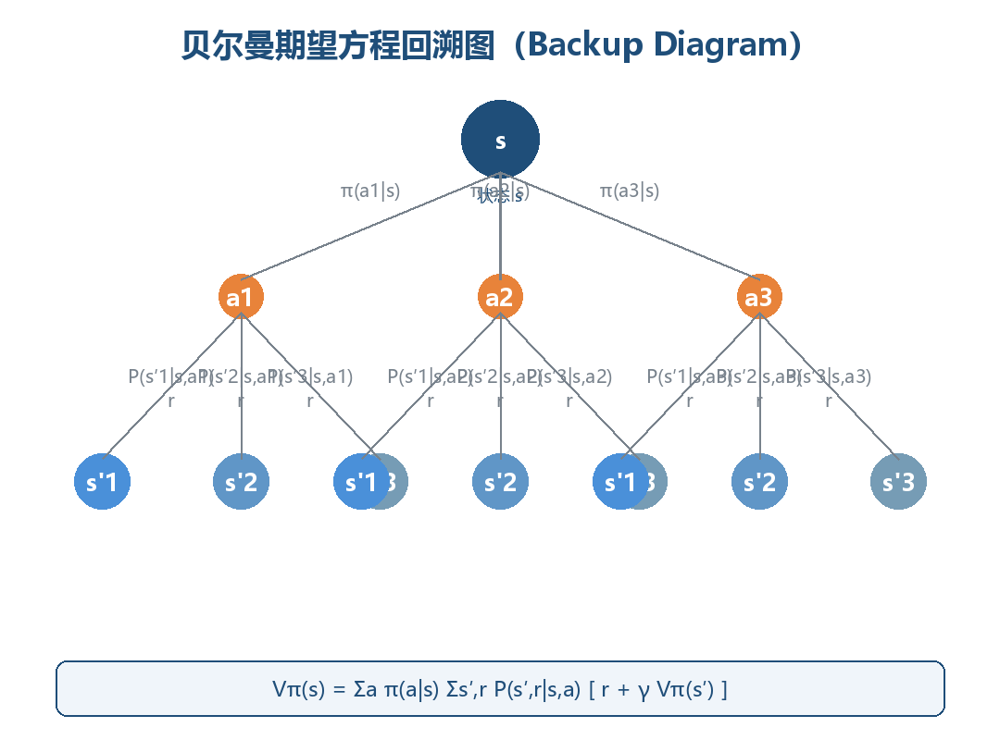

马尔可夫决策过程与数学基础
本章是强化学习的数学地基：从条件概率、全期望公式出发，搭建马尔可夫链、马尔可夫决策过程（MDP）、策略、轨迹、回报、价值函数与贝尔曼方程这一整条概念链。学完本章，你将能够用五元组描述任意 RL 问题、计算轨迹概率、写出并求解贝尔曼期望方程与贝尔曼最优方程。全文默认读者具备本科概率论与线性代数基础，所有结论均附可运行的 Python 验证代码。
一、概率与期望速查
强化学习的所有公式，本质上都是概率论与期望运算的排列组合：价值函数是条件期望，贝尔曼方程是全期望公式的展开，策略梯度是期望的梯度。本节按 RL 的使用方式 重新组织概率工具，而非泛泛复习。
1.1 随机变量与概率公理
设 \((\Omega, \mathcal{F}, \mathbb{P})\) 为概率空间：\(\Omega\) 是样本空间，\(\mathcal{F}\) 是事件域，\(\mathbb{P}\) 是概率测度。随机变量 \(X: \Omega \to \mathbb{R}\) 是样本空间到实数的映射。
核心思想：RL 中的随机性只有两个源头——环境的随机转移 \(s_{t+1} \sim P(\cdot|s_t, a_t)\) 与策略的随机采样 \(a_t \sim \pi(\cdot|s_t)\)。整个 RL 理论就是在这两个随机源上做期望运算。
概率测度满足三条公理，它们决定了 RL 中一切概率计算的合法性：
| 公理 | 表述 | RL 中的体现 |
|---|---|---|
| 非负性 | \(\mathbb{P}(A) \ge 0\) | 转移概率、策略概率均非负 |
| 规范性 | \(\mathbb{P}(\Omega) = 1\) | \(\sum_{s'} P(s'\|s,a)=1\)，\(\sum_a \pi(a\|s)=1\) |
| 可列可加性 | 互斥事件并的概率 = 概率之和 | 对互斥的下一状态求和，得到全概率 |
其中规范性最常用：转移矩阵每一行和为 1、策略在每个状态上的动作概率和为 1。代码中若发现行和不为 1，几乎可以断定定义有误。
1.2 条件概率与独立性
给定 \(B\)（\(\mathbb{P}(B)>0\)）时 \(A\) 的条件概率：
条件概率是 RL 的"主谓宾"，下列说法数学含义完全等价：
| 自然语言 | 数学表达式 | 出现场景 |
|---|---|---|
| 在 \(s\) 执行 \(a\) 后到达 \(s'\) 的概率 | \(P(s'\|s,a)\) | 环境模型、转移矩阵 |
| 在 \(s\) 下选择 \(a\) 的概率 | \(\pi(a\|s)\) | 策略 |
| 给定当前状态，未来与过去独立 | \(P(s_{t+1}\|s_t) = P(s_{t+1}\|s_t, s_{t-1}, \dots)\) | 马尔可夫性质 |
| 已知状态 \(s\) 时的期望回报 | \(\mathbb{E}[G_t \mid S_t = s]\) | 状态价值函数 |
独立性：若 \(\mathbb{P}(A\cap B) = \mathbb{P}(A)\mathbb{P}(B)\)，称 \(A\) 与 \(B\) 独立，记 \(A \perp\!\!\!\perp B\)。三组易混概念：
| 概念 | 定义 | 是否蕴含对方 |
|---|---|---|
| 互斥 | \(A \cap B = \varnothing\) | 不蕴含独立（概率皆正时反而不独立） |
| 独立 | \(\mathbb{P}(A \cap B) = \mathbb{P}(A)\mathbb{P}(B)\) | 不蕴含互斥 |
| 条件独立 | \(\mathbb{P}(A \cap B \mid C) = \mathbb{P}(A \mid C)\mathbb{P}(B \mid C)\) | 独立 \(\not\Rightarrow\) 条件独立，反之亦然 |
核心思想：马尔可夫性质正是一种条件独立假设——给定当前状态 \(S_t\)，未来与过去条件独立。它是整个 MDP 框架成立的前提，也是"状态"概念的意义所在：状态必须"榨干"历史中与未来决策相关的全部信息。
1.3 全概率公式与贝叶斯公式
设 \(B_1, \dots, B_n\) 是样本空间的一个划分（互斥且并为 \(\Omega\)），则对任意事件 \(A\)：
全概率公式是"按原因分情况求和"。在 RL 中有两个直接化身：
- 状态的边际分布演化：已知初始分布 \(\mu(s_0)\) 与转移概率 \(P\)， $\(\mathbb{P}(S_{t+1}=s') = \sum_s P(s' \mid s)\,\mathbb{P}(S_t=s) \quad\Longleftrightarrow\quad \mu_{t+1} = \mu_t P\)$ 马尔可夫链的分布演化就是反复应用全概率公式。
- 从动作价值到状态价值（第六章）：\(\{选动作 a\}_{a \in A}\) 构成一个划分， $\(V^\pi(s) = \sum_a \pi(a \mid s)\, Q^\pi(s,a)\)$
贝叶斯公式（全概率公式的逆向用法）：
用于逆向推断场景：POMDP 的信念状态更新、贝叶斯强化学习、Thompson Sampling 均直接依赖它。
1.4 期望与条件期望
离散随机变量的期望 \(\mathbb{E}[X] = \sum_x x\,\mathbb{P}(X=x)\) 是线性算子：\(\mathbb{E}[aX+bY] = a\mathbb{E}[X]+b\mathbb{E}[Y]\)。线性性是价值函数一切代数运算（矩阵形式、线性求解）的根基。
| 性质 | 公式 | RL 用途 |
|---|---|---|
| 线性性 | \(\mathbb{E}[aX+bY] = a\mathbb{E}[X]+b\mathbb{E}[Y]\) | 回报分解、误差分析 |
| 独立乘积 | \(X \perp\!\!\!\perp Y \Rightarrow \mathbb{E}[XY] = \mathbb{E}[X]\mathbb{E}[Y]\) | 方差分解 |
| 常数提取 | \(\mathbb{E}[c] = c\) | 折扣因子、常数奖励 |
| 期望的期望 | \(\mathbb{E}[X] = \mathbb{E}[\mathbb{E}[X \mid Y]]\) | 全期望公式（下节） |
条件期望 \(\mathbb{E}[X \mid Y=y]\) 是"已知 \(Y=y\) 后 \(X\) 的平均值"，是 \(y\) 的函数：
核心思想：价值函数 \(V^\pi(s)\) 的本质就是条件期望 \(\mathbb{E}[G_t \mid S_t = s]\)。理解这一点，就理解价值函数为什么是"函数"（随 \(s\) 变化）而非"数"。
1.5 全期望公式（Law of Total Expectation）
全期望公式是 RL 中最重要的一条概率恒等式，贝尔曼方程就是它的直接推论：
直观理解：算 \(X\) 的总体平均，先按 \(Y\) 分组求组内条件平均，再按各组占比加权求和。
在 RL 中的完整演示（理解贝尔曼方程的钥匙）：设 \(X = G_t\)、\(Y = S_{t+1}\)，回报满足递推 \(G_t = r_{t+1} + \gamma G_{t+1}\)，则：
| 全期望公式 | 贝尔曼方程 |
|---|---|
| \(\mathbb{E}[X] = \sum_y \mathbb{E}[X\|Y=y] \cdot \mathbb{P}(Y=y)\) | \(V^\pi(s) = \sum_{s'} \big[\,r + \gamma V^\pi(s')\big] \cdot P(s'\|s,\pi(s))\) |
| 总体平均 | 状态价值 |
| 分组内条件平均 | 即时奖励 + 折扣未来价值 |
| 分组占比 | 转移概率 |
记忆口诀：贝尔曼方程 = 全期望公式 + 回报递推式 \(G_t = R_{t+1} + \gamma G_{t+1}\)。
1.6 常用分布速查
策略与转移函数涉及的分布只有少数几种，全部列出：
| 分布 | 概率函数 | 参数 | RL 用途 |
|---|---|---|---|
| 伯努利 | \(\mathbb{P}(X=1)=p\) | \(p\) | 二值动作（左/右） |
| 二项 | \(\mathbb{P}(X=k)=\binom{n}{k}p^k(1-p)^{n-k}\) | \(n, p\) | n 次独立试验 |
| 均匀 | \(f(x)=\frac{1}{b-a}\) | \(a, b\) | 连续动作的初始探索 |
| 高斯 | \(f(x)=\frac{1}{\sqrt{2\pi}\sigma}e^{-\frac{(x-\mu)^2}{2\sigma^2}}\) | \(\mu, \sigma\) | 连续动作策略（第 6 章） |
| 分类/多项式 | \(\mathbb{P}(X=a_i)=\theta_i\) | \(\theta\) | 离散动作策略（softmax） |
| 几何 | \(\mathbb{P}(X=k)=(1-p)^{k-1}p\) | \(p\) | 首次成功所需步数（回合长度建模） |
1.7 速查总表：为什么这些是 RL 的数学地基
| 工具 | 公式 | 在 RL 中的直接用途 |
|---|---|---|
| 条件概率 | \(\mathbb{P}(A\|B)=\mathbb{P}(A\cap B)/\mathbb{P}(B)\) | 转移概率、策略、价值函数全是条件概率/条件期望 |
| 全概率公式 | \(\mathbb{P}(A)=\sum_i \mathbb{P}(A\|B_i)\mathbb{P}(B_i)\) | 分布演化 \(\mu_{t+1}=\mu_t P\)；\(V\) 与 \(Q\) 互化 |
| 贝叶斯公式 | \(\mathbb{P}(B_i\|A) \propto \mathbb{P}(A\|B_i)\mathbb{P}(B_i)\) | POMDP 信念、Thompson Sampling |
| 期望 | \(\mathbb{E}[X]=\sum_x x\,\mathbb{P}(X=x)\) | 一切"平均回报"的定义 |
| 全期望公式 | \(\mathbb{E}[X]=\mathbb{E}[\mathbb{E}[X\|Y]]\) | 贝尔曼方程的推导根基 |
| 线性方程组 | \((I-\gamma P)V = R\) | 表格型 MDP 的精确求解（第六、八节） |
为什么是数学地基，四点理由：
- 奖励假设的期望形式：目标"最大化累积奖励"在数学上是最大化期望 \(\mathbb{E}[G_t]\)，期望运算贯穿全部算法。
- 价值函数就是条件期望：\(V^\pi(s)=\mathbb{E}[G_t \mid S_t=s]\)，一切价值估计算法（DP/MC/TD/DQN）都在估计这个条件期望。
- 贝尔曼方程 = 全期望公式：动态规划、Q-Learning、DQN 的更新规则全部源自全期望公式的展开（第六节完整推导）。
- 随机性建模：\(P(s'|s,a)\) 与 \(\pi(a|s)\) 都是条件概率分布，马尔可夫性质是条件独立假设——概率语言是描述 RL 问题的唯一精确语言。
二、马尔可夫性质与马尔可夫链
2.1 马尔可夫性质（Markov Property）
马尔可夫性质：下一时刻的状态只依赖于当前状态（与当前动作），与更早的历史无关。对无动作的过程（马尔可夫链）：
即：给定现在，未来与过去条件独立。
核心思想：马尔可夫性质不是环境的客观属性，而是建模选择。现实世界几乎不存在严格马尔可夫的过程——只要状态定义得足够"丰富"（包含所有影响未来的信息），就能把非马尔可夫过程改写成马尔可夫过程。状态设计（State Design）的本质，就是构造满足马尔可夫性质的充分统计量。
| 状态设计 | 满足马尔可夫性质？ | 原因 |
|---|---|---|
| 棋盘完整局面 | ✅ 是 | 未来只由当前局面决定 |
| 最近三步落子 | ❌ 否 | 更早落子仍影响未来 |
| 单帧视频画面 | ❌ 否 | 速度、加速度信息丢失 |
| 多帧堆叠 + 光流 | ✅ 近似 | 包含运动信息的充分统计量 |
为什么重要：马尔可夫性质让"状态"成为历史信息的压缩表示——智能体只需记住当前状态，无需整条历史。这直接把 RL 从"历史序列上的优化"（指数级）简化为"状态上的优化"（多项式级）。一旦过程非马尔可夫，几乎所有理论保证（收敛性、最优性）都会崩塌。
2.2 状态转移矩阵（Transition Matrix）
离散时间、有限状态、无动作的马尔可夫过程称为马尔可夫链（Markov Chain），由状态集合 \(S=\{s_1,\dots,s_n\}\) 与转移矩阵 \(P\) 完全刻画：
行随机矩阵：每行非负且行和为 1。\(P\) 同时编码"能到哪"（非零元素位置）与"有多大概率到"（元素值）。
示例：三状态天气链（晴 0 / 阴 1 / 雨 2）：
| 当前 \ 下一 | 晴 (0) | 阴 (1) | 雨 (2) | 行和 |
|---|---|---|---|---|
| 晴 (0) | 0.6 | 0.3 | 0.1 | 1.0 |
| 阴 (1) | 0.2 | 0.5 | 0.3 | 1.0 |
| 雨 (2) | 0.3 | 0.2 | 0.5 | 1.0 |
读法：今天晴，明天 60% 晴、30% 阴、10% 雨。注意本书约定行 = 当前状态、列 = 下一状态（与部分教材相反），写代码时务必保持一致。
2.3 状态转移图（ASCII）
马尔可夫链也可用有向图表示：节点是状态，边权是转移概率：
0.3 0.3
┌──────────────────┐ ┌──────────────────┐
▼ │ ▼ │
┌─────────┐ 0.1 ┌─────────┐ 0.3 ┌─────────┐
│ 晴 0 │────────►│ 阴 1 │────────►│ 雨 2 │
└──┬──┬───┘ └──┬──┬───┘ └──┬──┬───┘
│ │0.6(自环) │ │0.5(自环) │ │0.5(自环)
│ └────0.3──────────┘ └────0.3──────────┘ │
│ │
└────────────────0.1─────────────────────────┘
（雨→晴 = 0.3 的边为清晰起见未画出，以矩阵 P 为准）
每个节点出边概率之和为 1（含自环），与矩阵行和约束一一对应。图中从任何状态可达任何状态 → 链不可约（irreducible）；所有状态有自环 → 非周期（aperiodic）。这两个性质是平稳分布存在且唯一的充分条件（2.5 节）。
2.4 n 步转移与 Chapman-Kolmogorov 方程
\(n\) 步转移概率 \(P^{(n)}_{ij} = \mathbb{P}(S_{t+n}=s_j \mid S_t=s_i)\) 由转移矩阵的 \(n\) 次幂给出：
这来自 Chapman-Kolmogorov 方程——把 \(n\) 步拆成"先走 \(m\) 步到中间状态，再走 \(n-m\) 步"，对中间状态求和（全概率公式）：
初始分布 \(\mu_0\)（行向量）下，\(t\) 时刻分布为 \(\mu_t = \mu_0 P^t\)。
手工验证 \(P^2\)（\(n=2\)，晴→雨）：\(0.6\times0.1 + 0.3\times0.3 + 0.1\times0.5 = 0.20\)，与下表的第 0 行第 2 列一致：
| \(P^2\) | 晴 | 阴 | 雨 |
|---|---|---|---|
| 晴 | 0.45 | 0.35 | 0.20 |
| 阴 | 0.31 | 0.37 | 0.32 |
| 雨 | 0.37 | 0.29 | 0.34 |
2.5 平稳分布（Stationary Distribution）
若分布 \(\pi\)（行向量）满足 \(\pi = \pi P\)，即 \(\pi_j = \sum_i \pi_i P_{ij}\)，则称 \(\pi\) 为平稳分布：一旦分布达到 \(\pi\) 就永远保持——"流入每个状态的概率质量 = 流出量"。
| 性质 | 条件 | 结论 |
|---|---|---|
| 存在性 | 有限状态链 | 至少存在一个平稳分布 |
| 唯一性 | 不可约 + 非周期 | 平稳分布唯一，且 \(\lim_{t\to\infty}\mu_t=\pi\) 与 \(\mu_0\) 无关 |
| 收敛速率 | 第二特征值 \(\lambda_2\) | $ |
核心思想：\(\lim_{t\to\infty} P^t\) 的每一行收敛到同一分布 \(\pi\)——链会"遗忘"初始状态。这是蒙特卡洛方法（第 3 章）的理论根基：从任意状态出发的长序列，状态频率近似平稳分布。平稳分布也是 MCMC 与 PageRank 的核心概念。
对天气链解 \(\pi P = \pi\) 且 \(\sum\pi_i=1\)，得 \(\pi = (0.38, 0.34, 0.28)\)：长期来看 38% 晴、34% 阴、28% 雨，与今天天气无关。
2.6 代码演示：矩阵幂与收敛到平稳分布
import numpy as np
np.set_printoptions(precision=3) # 输出保留 3 位小数
# 三状态马尔可夫链的转移矩阵：行 = 当前状态，列 = 下一状态
P = np.array([
[0.6, 0.3, 0.1], # 晴 -> 晴/阴/雨
[0.2, 0.5, 0.3], # 阴 -> 晴/阴/雨
[0.3, 0.2, 0.5], # 雨 -> 晴/阴/雨
])
# 初始分布：今天 100% 是晴天
mu0 = np.array([1.0, 0.0, 0.0])
# n 步转移：mu_t = mu_0 · P^t（矩阵幂实现）
for n in [1, 2, 5, 10, 20]:
Pn = np.linalg.matrix_power(P, n) # n 步转移矩阵
print(f"n={n:2d} 分布={mu0 @ Pn}") # 初始分布左乘 P^n
# 收敛验证：P^t 每一行都趋近同一分布（= 平稳分布）
print("P^20 第 0 行:", np.linalg.matrix_power(P, 20)[0])
print("P^50 第 0 行:", np.linalg.matrix_power(P, 50)[0])
# Chapman-Kolmogorov 验证：两种方式算 P^3 应完全一致
P3a = np.linalg.matrix_power(P, 3) # 直接三次幂
P3b = P @ np.linalg.matrix_power(P, 2) # 拆成 1 步 + 2 步
print("P^3 两种算法一致:", np.allclose(P3a, P3b))
# 特征分解求平稳分布：π 是 P^T 特征值 1 对应的特征向量
evals, evecs = np.linalg.eig(P.T)
idx = int(np.argmin(np.abs(evals - 1.0))) # 找特征值最接近 1 的列
pi = np.real(evecs[:, idx])
pi = pi / pi.sum() # 归一化为概率分布
print("平稳分布 π :", pi)
# 预期输出:
n= 1 分布=[0.6 0.3 0.1]
n= 2 分布=[0.45 0.35 0.2 ]
n= 5 分布=[0.381 0.342 0.277]
n=10 分布=[0.38 0.34 0.28]
n=20 分布=[0.38 0.34 0.28]
P^20 第 0 行: [0.38 0.34 0.28]
P^50 第 0 行: [0.38 0.34 0.28]
P^3 两种算法一致: True
平稳分布 π : [0.38 0.34 0.28]
读结果：① \(n=1\) 时分布恰是 \(P\) 的第 0 行；② 随 \(n\) 增大分布向 \((0.38, 0.34, 0.28)\) 收敛；③ \(n=20\) 与 \(n=50\) 完全相同——链已"忘记"初始状态。矩阵幂、行收敛、特征分解三条路径殊途同归。
2.7 链的分类与性质
| 分类 | 定义 | 对平稳分布的影响 |
|---|---|---|
| 不可约（irreducible） | 任意两状态互相可达 | 平稳分布唯一性的必要条件 |
| 非周期（aperiodic） | 返回自身步数的最大公约数为 1 | 保证 \(\mu_t\) 收敛（而非振荡） |
| 常返（recurrent） | 从 \(s\) 出发最终必回 \(s\) | 平稳分布质量集中于常返类 |
| 瞬态（transient） | 可能一去不返 | 平稳分布质量为零 |
| 吸收态（absorbing） | \(P(s\|s)=1\)，进入后永不离开 | 回合制任务的终止建模（3.6 节） |
例子：天气链不可约、非周期、全部常返 → 平稳分布唯一；若把雨设为吸收态（\(P(雨|雨)=1\)），则晴/阴成为瞬态，平稳分布退化为 \(\pi=(0,0,1)\)——一旦下雨永不晴天。
2.8 从马尔可夫链到马尔可夫决策过程
马尔可夫链只描述"环境自主演化"，没有智能体、动作与奖励。升级路径：
马尔可夫链 (MC) + 动作 A + 奖励 R
S, P(s'|s) ──► S, A, P(s'|s,a) ──► MDP
（环境响应动作） （回报可度量、可优化）
| 概念 | 马尔可夫链 | MDP |
|---|---|---|
| 转移 | \(P(s'\|s)\) 固定 | \(P(s'\|s,a)\) 依赖动作 |
| 谁在决策 | 无人，自然演化 | 智能体按策略 \(\pi\) 决策 |
| 奖励 | 无 | \(R(s,a,s')\) |
| 研究问题 | 分布如何演化、何时平稳 | 如何选动作最大化累积回报 |
| 求解工具 | 矩阵幂、特征分解 | 贝尔曼方程、动态规划、RL 算法 |
下一节给出 MDP 的正式定义。
三、MDP 正式定义
3.1 五元组定义
马尔可夫决策过程（Markov Decision Process, MDP） 是绝大多数 RL 问题的数学框架，由五元组刻画：
| 符号 | 名称 | 定义 | 数学形式 |
|---|---|---|---|
| \(S\) | 状态集合 | 环境所有可能状态 | \(S=\{s_1,s_2,\dots\}\) |
| \(A\) | 动作集合 | 智能体所有可选动作 | \(A=\{a_1,a_2,\dots\}\) |
| \(P\) | 状态转移函数 | 在 \(s\) 执行 \(a\) 后到 \(s'\) 的概率 | \(P(s'\|s,a)=\mathbb{P}(S_{t+1}=s' \mid S_t=s, A_t=a)\) |
| \(R\) | 奖励函数 | 转移后的即时标量奖励 | \(r_t = R(S_t, A_t, S_{t+1})\) |
| \(\gamma\) | 折扣因子 | 未来奖励的折现率 | \(\gamma \in [0,1]\) |
核心思想：MDP 是一个"世界模型"——给定当前状态与动作，环境如何反应（转移到哪、给多少奖励）完全由 \(P\) 与 \(R\) 决定，且不依赖历史。智能体不一定知道 \(P\) 与 \(R\)：DP 假设模型已知，RL 通过交互学习模型或直接学习策略/价值——这是两者最根本的分野。
3.2 五元组逐项拆解：GridWorld 与围棋双例
| 符号 | 含义 | GridWorld 例子 | 围棋例子 |
|---|---|---|---|
| \(S\) | 所有状态 | 25 个格子（5×5，含 1 终点） | 所有合法局面（约 \(10^{170}\) 个） |
| \(A\) | 所有动作 | 上/下/左/右 | 361 个交叉点落子 |
| \(P(s'\|s,a)\) | 转移概率 | 向上走：无墙则 \(P=1\) 移动，撞墙 \(P=1\) 原地 | 规则确定：落子后局面唯一，\(P=1\)（确定性） |
| \(R(s,a,s')\) | 即时奖励 | 进入终点 \(0\)，其余步 \(-1\) | 提子/打劫局部奖惩，终局 \(\pm1\) |
| \(\gamma\) | 折扣因子 | 通常 0.9–0.99 | 常取 1（有限步游戏无需折扣） |
奖励函数的三种写法（文献混用，需能互译）：
| 写法 | 定义 | 特点 |
|---|---|---|
| 三参数 | \(R(s,a,s')\) | 依赖转移结果，最精细 |
| 两参数 | \(R(s,a)=\sum_{s'} P(s'\|s,a)\,R(s,a,s')\) | 对下一状态取期望 |
| 一参数 | \(R(s)=\sum_a \pi(a\|s)\,R(s,a)\) | 依赖策略，分析时使用 |
3.3 有限状态 vs 无限状态
| 维度 | 有限状态 MDP | 无限状态 MDP |
|---|---|---|
| 状态个数 | \(\|S\|<\infty\) | 连续状态（如 \(\mathbb{R}^d\)）或可数无限 |
| 表示方式 | 表格/向量精确表示 | 函数逼近（神经网络） |
| 求解方法 | 线性方程组、查表迭代 | 函数逼近 + 采样 |
| 精确解 | 存在（贝尔曼方程闭式解） | 一般不存在，只能逼近 |
| 典型例子 | GridWorld、21 点 | CartPole 连续状态、机器人控制 |
| 复杂度 | \(O(\|S\|^2\|A\|)\) 量级 | 维数灾难 |
维数灾难（Curse of Dimensionality）：状态空间随维度指数膨胀——\(d\) 维连续状态若每维离散成 10 格，共 \(10^d\) 个状态。这就是表格方法止步于低维、深度 RL 必须登场的原因（第 5 章）。动作空间同理：离散动作可用 \(Q\) 表或输出 logits 的网络；连续动作（力矩、舵角）需要策略梯度方法直接输出分布参数（第 6、7 章的分水岭）。
3.4 交互流程（Agent-Environment Loop）
MDP 定义"规则"，RL 发生在智能体与环境持续交互中：
┌───────────────────────────────────────────────┐
│ │
▼ │
┌─────────┐ a_t ┌──────────┐ r_{t+1} │
│ 环境 │───────────► │ 智能体 │◄───────────────┘
│ (MDP) │◄─────────── │ (策略 π) │
└─────────┘ s_{t+1} └──────────┘
时序展开（每个时间步 \(t=0,1,2,\dots\)）：
时刻: t=0 t=1 t=2 t=3
S₀ ──a₀──► R₁, S₁ ──a₁──► R₂, S₂ ──a₂──► R₃, S₃ ──► ...
约定：动作 \(A_t\) 在时刻 \(t\) 依 \(S_t\) 做出；奖励 \(R_{t+1}\) 与下一状态 \(S_{t+1}\) 是环境对 \(A_t\) 的"回应"，在 \(t+1\) 同时产生。这个"错位一拍"的时序约定（Sutton & Barto 记号）贯穿全书：
| 变量 | 产生时刻 | 依赖 |
|---|---|---|
| \(S_t\) | \(t\) | 由 \(S_{t-1}, A_{t-1}\) 经 \(P\) 产生 |
| \(A_t\) | \(t\) | 由 \(S_t\) 经 \(\pi\) 产生 |
| \(R_{t+1}, S_{t+1}\) | \(t+1\) | 由 \(S_t, A_t\) 经 \(P, R\) 产生 |
3.5 回合制 vs 持续型任务
| 类型 | 定义 | 回报形式 | 典型例子 |
|---|---|---|---|
| 回合制（Episodic） | 存在终止状态，有限步结束 | \(G_t=\sum_{k=0}^{T-t-1}\gamma^k r_{t+k+1}\) | 围棋、Atari、GridWorld |
| 持续型（Continuing） | 永不终止 | \(G_t=\sum_{k=0}^{\infty}\gamma^k r_{t+k+1}\)（需 \(\gamma<1\)） | 交易、温控、推荐 |
统一技巧：回合制任务可人为引入吸收态（absorbing state）——进入后永远停留且奖励恒 0，于是回合制被统一进持续型框架：
回合制: s₀ → s₁ → ... → s_T(终止)
持续型: s₀ → s₁ → ... → s_T → s_T → s_T → ... （s_T 为吸收态，r ≡ 0）
3.6 MDP 的常见变体
| 变体 | 定义 | 与 MDP 的关系 |
|---|---|---|
| MRP | \(\langle S, P, R, \gamma \rangle\)，无动作 | MDP 固定策略后得到，价值函数定义域 |
| POMDP | 增加观测 \(O\) 与观测函数 \(O(o\|s,a)\) | 智能体看不到真状态，维护信念状态 |
| Bandit | 上下文老虎机，状态无转移 | MDP 特例：\(P(s'\|s,a)\) 与 \(s\) 无关 |
| SMDP / 分层 MDP | 动作持续多个时间步 | 时间抽象（temporal abstraction） |
MRP 是本章后续的主角：给 MDP 一个策略 \(\pi\)，动作被"积分掉"，退化为 MRP \(\langle S, P^\pi, R^\pi, \gamma \rangle\)：
价值函数 \(V^\pi\) 就是在这个"策略诱导 MRP"上做期望运算——这个视角让第六节的矩阵形式顺理成章。
POMDP 的信念状态循环（顺带一提，第 9 章展开）：
┌────────────────────────────────────────────┐
▼ │
┌─────────┐ o_{t+1} ┌───────────────┐ │
│ 环境 │───────────► │ 信念更新 │ │
│ (真状态) │ │ b'(s')∝O(o|s',a)ΣP b(s) │
└─────────┘◄─────────── │ │ │
a_t └───────┬───────┘ │
│ 动作选择 a_t │
└─────────────────┘
3.7 奖励设计模式速查
| 模式 | 定义 | 优点 | 风险 |
|---|---|---|---|
| 稀疏奖励（Sparse） | 只在关键事件给奖励 | 无偏、简单 | 学习极慢，探索困难 |
| 密集奖励（Dense） | 每步给奖励（如 \(-1\)/步） | 学习快 | 可能诱导次优行为 |
| 势函数塑形（Potential-Based） | \(F=\gamma\Phi(s')-\Phi(s)\) | 保持最优策略不变 | 设计 \(\Phi\) 需要领域知识 |
| 奖励黑客（Reward Hacking） | 智能体钻奖励漏洞 | —— | 学到的行为不是想要的（第 10 章） |
四、策略与轨迹
4.1 策略的定义
策略（Policy） 是状态到动作的映射规则，是 RL 中唯一需要学习的对象：
| 类型 | 定义 | 数学形式 | 典型例子 |
|---|---|---|---|
| 确定性策略 | 每状态对应唯一动作 | \(\pi(s)=a\)，或 \(\pi(a\|s)\in\{0,1\}\) | 贪心策略、必胜走法 |
| 随机策略 | 每状态上动作按分布 | \(\pi(a\|s)\in[0,1]\) | ε-greedy、softmax、围棋概率落子 |
4.2 确定性策略 vs 随机策略
| 维度 | 确定性策略 | 随机策略 |
|---|---|---|
| 形式 | \(s \mapsto a\) 单值映射 | \(s \mapsto\) 动作分布 |
| 表达力 | 随机策略的特例（概率集中单点） | 严格更一般 |
| 探索能力 | 无（除非手动加随机） | 天然具备 |
| 对抗鲁棒性 | 易被预测 | 不可预测，博弈占优 |
| 部分可观测 | 可能振荡 | 平滑混合，表现更好 |
| 连续动作 | 需特殊处理（DDPG 等） | 直接输出分布参数（高斯策略） |
| 最优性 | 表格型 MDP 中总存在确定性最优策略 | 一般场景非必需，但利于探索/博弈 |
核心思想：表格型 MDP（有限状态、有限动作、折扣回报）中一定存在确定性最优策略（第七节）。为何还需要随机策略？① 探索需要随机性（ε-greedy）；② 自博弈中随机性防针对（AlphaGo）；③ 部分可观测环境下随机策略可严格优于确定性策略。
4.3 常见策略族
| 策略 | 公式 | 特点 | 用途 |
|---|---|---|---|
| 贪心（Greedy） | \(\pi(s)=\arg\max_a Q(s,a)\) | 确定性、零探索 | 利用阶段 |
| ε-greedy | 以 \(1-\epsilon\) 贪心，以 \(\epsilon\) 均匀随机 | 简单、可调探索量 | 第 0、4 章 |
| Softmax（Boltzmann） | \(\pi(a\|s)=\frac{e^{Q(s,a)/\tau}}{\sum_b e^{Q(s,b)/\tau}}\) | 按价值加权随机，温度 \(\tau\) 控制集中度 | 连续/离散通用 |
| 高斯策略 | \(\pi(a\|s)=\mathcal{N}(\mu_\theta(s), \sigma_\theta^2)\) | 连续动作的标准选择 | 第 6、7 章 |
| 均匀随机 | \(\pi(a\|s)=1/\|A\|\) | 零知识基线 | 基线对比 |
4.4 轨迹（Trajectory）
轨迹（Trajectory / Episode / Rollout） 是交互产生的完整序列，是 RL 的"数据样本"：
轨迹可视化（时间线）:
S₀ ─a₀→ R₁,S₁ ─a₁→ R₂,S₂ ─a₂→ R₃,S₃ ─a₃→ ... ─→ R_T,S_T(终止)
│ │ │ │ │
μ(s₀) π(a₀|s₀) π(a₁|s₁) π(a₂|s₂) P(s_T|s_{T-1},a_{T-1})
P(s₁|s₀,a₀) P(s₂|s₁,a₁) P(s₃|s₂,a₂)
| 术语 | 含义 | 粒度 |
|---|---|---|
| 状态转移（transition） | 单步 \((s, a, r, s')\) | 一步 |
| 轨迹（trajectory） | 完整交互序列 | 一个回合 |
| 经验回放池（replay buffer） | 大量转移的集合 | 数据集（第 5 章 DQN） |
4.5 轨迹出现概率
轨迹概率由初始分布 + 策略 + 转移函数三者的乘积给出：
| 因子 | 来源 | 含义 |
|---|---|---|
| \(\mu(s_0)\) | 环境 | 初始状态概率 |
| \(\pi(a_t \mid s_t)\) | 智能体 | 在 \(s_t\) 选 \(a_t\) 的概率 |
| \(P(s_{t+1} \mid s_t, a_t)\) | 环境 | 转移概率 |
| 连乘 | 马尔可夫性质 | 各步条件独立，概率相乘 |
核心思想：轨迹概率是 RL 目标函数的"权重"——任何策略 \(\pi\) 的期望回报可写成"按 \(\pi\) 诱导的轨迹分布取期望"：\(\mathbb{E}_{\tau \sim \pi}[\cdot]\)。这正是第 6 章策略梯度对策略参数求导的出发点。"\(\tau \sim \pi\)"表示轨迹按上述乘积分布抽样。
重要推论：奖励函数 \(R\) 不出现在轨迹概率中——改变奖励不改变"哪些轨迹会出现"，只改变"哪些轨迹被看重"。这是奖励塑形（Reward Shaping）理论（第 9 章）的出发点。
4.6 代码：给定策略计算轨迹概率
# 三状态 MDP：状态 {0, 1, 2}，动作 {L, R}
# P[s][a][s'] = 在状态 s 执行动作 a 后转移到 s' 的概率
P = {
0: {"L": {0: 0.9, 1: 0.1}, "R": {1: 0.8, 2: 0.2}},
1: {"L": {0: 0.5, 2: 0.5}, "R": {1: 0.6, 2: 0.4}},
2: {"L": {0: 1.0}, "R": {1: 0.7, 2: 0.3}},
}
# 随机策略 pi[s][a] = 在状态 s 选择动作 a 的概率
pi = {
0: {"L": 0.7, "R": 0.3},
1: {"L": 0.4, "R": 0.6},
2: {"L": 0.5, "R": 0.5},
}
# 给定轨迹：s0=0, a0=L, s1=1, a1=R, s2=2
trajectory = [0, "L", 1, "R", 2]
def trajectory_probability(traj, P, pi, p0):
"""轨迹概率：P(τ) = μ(s0) · Π_t π(a_t|s_t) · P(s_{t+1}|s_t,a_t)"""
prob = p0[traj[0]] # 初始状态概率 μ(s0)
t = 0
while t + 2 < len(traj): # 每轮消费 (s, a, s') 三元组
s, a, s_next = traj[t], traj[t + 1], traj[t + 2]
prob *= pi[s][a] # 策略概率 π(a|s)
prob *= P[s][a][s_next] # 转移概率 P(s'|s,a)
t += 2
return prob
p0 = {0: 1.0, 1: 0.0, 2: 0.0} # 初始状态确定从 0 出发
print("轨迹概率 P(τ) =", trajectory_probability(trajectory, P, pi, p0))
# 预期输出:
轨迹概率 P(τ) = 0.0168
手工验算：\(0.7 \times 0.1 \times 0.6 \times 0.4 = 0.0168\)，其中 \(0.7=\pi(L|0)\)、\(0.1=P(1|0,L)\)、\(0.6=\pi(R|1)\)、\(0.4=P(2|1,R)\)。初始状态概率为 1（确定从 0 出发），无额外因子。
4.7 轨迹与"体验"：RL 的数据形态
| 学习范式 | 数据形态 | 与轨迹的关系 |
|---|---|---|
| 监督学习 | 独立同分布样本 \((x,y)\) | 无时序结构 |
| 离线 RL | 固定轨迹数据集 \(\mathcal{D}\) | 轨迹的静态集合（第 9 章） |
| 在线 RL | 实时交互产生的轨迹流 | 策略更新 → 新轨迹 → 再更新 |
| 模仿学习 | 专家轨迹 | 从轨迹提取策略（第 9 章） |
关键认识：轨迹数据是策略相关的——用 \(\pi\) 采的轨迹服从 \(\mathbb{P}(\cdot|\pi)\)。策略一更新，旧轨迹分布就"过时"（分布偏移）。这是 RL 与监督学习最深刻的差异：数据分布随模型变化。第 5 章经验回放 + 目标网络、第 6 章重要性采样/裁剪，本质都是在与这个偏移搏斗。
五、回报与折扣因子
5.1 回报（Return）的定义
回报（Return） \(G_t\) 是从时刻 \(t\) 开始的累积折扣奖励，是 RL 优化的最终目标：
注意下标：\(G_t\) 从 \(R_{t+1}\) 开始（\(R_{t+1}\) 是 \(A_t\) 的回应）。回报满足递推式：
递推式分解:
G_t = R_{t+1} + γ · G_{t+1}
└─即时奖励─┘ └──折扣后的未来回报──┘
回报 vs 奖励（务必分清）：
| 概念 | 符号 | 性质 | GridWorld 例子 |
|---|---|---|---|
| 奖励 | \(R_t\) | 即时、单步、标量 | 走一步得 \(-1\) |
| 回报 | \(G_t\) | 累积、多步、随机变量 | 起点到终点的累计折扣奖励 |
| 价值 | \(V(s)\) | 回报的期望、确定性函数 | 状态 \(s\) 的平均回报 |
5.2 折扣因子的作用
\(\gamma \in [0,1]\) 有三层作用：
① 数学作用：保证收敛。 奖励有界 \(|r_t| \le R_{\max}\) 时：
等比级数求和保证无限视界回报有限；\(\gamma \to 1\) 时上界发散。
② 经济直觉：未来收益打折。 现在的 100 元比一年后的 100 元更值钱。\(\gamma\) 即折现率：越小，未来奖励被压得越狠，智能体越短视。
③ 行为学作用：控制远见程度。 有效视界约 \(\frac{1}{1-\gamma}\) 步：
| \(\gamma\) | 有效视界 \(\approx \frac{1}{1-\gamma}\) | 行为特征 | 适用场景 |
|---|---|---|---|
| 0 | 1 步 | 极度短视 | 单步决策、Bandit |
| 0.5 | 2 步 | 短视 | 快速响应控制 |
| 0.9 | 10 步 | 中等远见 | 一般表格型任务 |
| 0.99 | 100 步 | 长远规划 | 深度 RL 默认值 |
| 1.0 | \(\infty\) | 完全远视 | 有限步游戏（围棋） |
5.3 极端情形：γ = 0 与 γ → 1
| 维度 | \(\gamma = 0\) | \(\gamma \to 1\) |
|---|---|---|
| 回报 | \(G_t = R_{t+1}\)（只看一步） | \(G_t = \sum_k R_{t+k+1}\)（看全部未来） |
| 目标 | 最大化即时奖励 | 最大化长期累积 |
| 价值函数 | \(V(s)=\mathbb{E}[R_{t+1}\|S_t=s]\) | \(V(s)=\mathbb{E}[\text{总奖励}]\) |
| 优点 | 简单、方差小 | 考虑长远、支持延迟奖励 |
| 缺点 | 无视延迟奖励（看不到围棋终局） | 方差大、收敛慢、可能发散 |
| 场景 | 即时反馈推荐、Bandit | 棋类、导航、长期投资 |
何时用 \(\gamma=1\)？ 回合制有限步任务可安全取 \(\gamma=1\)（有限和，无收敛问题）；持续型任务必须 \(\gamma<1\)。工程上不确定就用 \(\gamma=0.99\) 起步。
5.4 有限视界 vs 无限视界
| 维度 | 有限视界（Finite Horizon） | 无限视界（Infinite Horizon） |
|---|---|---|
| 回报 | \(G_t=\sum_{k=0}^{H-t-1}\gamma^k r_{t+k+1}\) | \(G_t=\sum_{k=0}^{\infty}\gamma^k r_{t+k+1}\) |
| 步数 | 固定 \(H\) 步 | 无限（或随机终止） |
| 最优策略 | 依赖剩余步数（非平稳） | 平稳（与 \(t\) 无关） |
| 求解 | 时间相关的贝尔曼方程 | 时间无关的贝尔曼方程，更简单 |
| 例子 | 象棋残局限定步数 | 多数 RL 基准、机器人控制 |
核心思想：无限视界 + 折扣因子是 RL 理论分析的"主场"——它保证最优策略平稳（不随时间变化），贝尔曼方程是时间无关的代数方程，从而可用不动点理论（第七节）证明存在性与唯一性。工程实现中，有限视界任务也常近似为无限视界折扣问题求解。
平均奖励准则（Average Reward）：\(\gamma=1\) 且持续型时无限和发散，改用长期平均奖励 \(\lim_{H\to\infty}\frac{1}{H}\mathbb{E}[\sum_{k=1}^{H} R_{t+k}]\)。它是折扣准则的极限（\(\gamma\to1\)），用于排队、调度，工程上远不如折扣准则常用。
5.5 代码：折扣回报的计算
# 一条长度为 10 的奖励序列（模拟一个回合的即时奖励流）
rewards = [1, 0, 0, 1, 0, 0, 0, 1, 0, 0]
def discounted_return(rewards, gamma, t=0):
"""从时刻 t 开始的折扣回报：G_t = Σ_k γ^k · r_{t+k+1}"""
return sum(gamma**k * r for k, r in enumerate(rewards[t:]))
# 同一串奖励，不同折扣因子下"价值感"截然不同
for gamma in [0.0, 0.5, 0.9, 0.99]:
G = discounted_return(rewards, gamma)
print(f"γ={gamma:<5} G_0 = {G:.3f}")
# 预期输出:
γ=0.0 G_0 = 1.000
γ=0.5 G_0 = 1.133
γ=0.9 G_0 = 2.207
γ=0.99 G_0 = 2.902
读结果：奖励在第 1、4、8 步有 \(+1\)。\(\gamma=0\) 只看到第一个 \(+1\)；\(\gamma=0.5\) 只在乎近处奖励（\(G=1.133\)）；\(\gamma=0.99\) 几乎把三次奖励全部计入（\(G=2.902 \approx 3\)）。折扣因子就是"注意力窗口"的旋钮。
5.6 工程要点
| 要点 | 说明 |
|---|---|
| Episode 截断 | 持续型任务采样时人为截断，末尾的 \(V(s')\) 用估计值补齐（bootstrapping，第 4 章） |
| \(\gamma\) 与方差 | \(\gamma\) 越大方差越大（远期奖励计入越多），深度 RL 常用 0.99 平衡 |
| 回报归一化 | 训练时对回报做标准化（除以标准差）可显著稳定策略梯度（第 6 章） |
| 折扣 ≠ 时间偏好 | 有些场景 \(\gamma\) 纯粹是数学工具（保证收敛），不代表"耐心" |
六、价值函数与贝尔曼期望方程
价值函数是 RL 的"估值系统"。策略、轨迹、回报在此汇聚成两个核心函数 \(V^\pi\) 与 \(Q^\pi\)，并推导出支配一切表格型 RL 算法的贝尔曼期望方程。
6.1 状态价值函数（State-Value Function）
在策略 \(\pi\) 下，状态 \(s\) 的状态价值是从 \(s\) 出发、之后一直按 \(\pi\) 行动的期望折扣回报：
| 要点 | 说明 |
|---|---|
| 下标 \(\pi\) | 期望按 \(\pi\) 诱导的轨迹分布计算（4.5 节） |
| 条件于 \(S_t=s\) | 价值是状态的函数（条件期望） |
| 为什么取期望 | 未来有随机性（转移 + 策略），取平均消除随机性 |
| \(G_t\) vs \(V^\pi\) | \(G_t\) 是随机变量，\(V^\pi(s)\) 是它的条件期望（确定性数） |
直觉：\(V^\pi(s)\) 衡量"按 \(\pi\) 玩，从 \(s\) 出发平均能拿多少"。GridWorld 中靠近终点的格子价值高（很快拿到终止奖励），角落价值低（要走很多 \(-1\) 步）。
6.2 动作价值函数（Action-Value Function）
动作价值：在状态 \(s\) 先执行动作 \(a\)，之后按 \(\pi\) 行动的期望折扣回报：
与 \(V\) 的唯一差别在"第一步动作"：\(V\) 第一步也按 \(\pi\)，\(Q\) 第一步指定为 \(a\)。
| 函数 | 自变量 | 含义 | 决策用途 |
|---|---|---|---|
| \(V^\pi(s)\) | 状态 | "这个局面值多少" | 评估状态好坏 |
| \(Q^\pi(s,a)\) | 状态-动作对 | "这个局面做这个动作值多少" | 直接比较动作优劣 |
为什么需要 \(Q\)？ \(V\) 把动作"平均掉了"，不能直接指导选择——从 \(V\) 选动作必须知道模型 \(P\)（算 \(\mathbb{E}[r+\gamma V(s')]\)）；而 \(Q\) 按动作组织，无需模型即可比较 \(Q(s,a_1)\) 与 \(Q(s,a_2)\)。这正是免模型 RL（Q-Learning、DQN）直接学 \(Q\) 的原因。
6.3 V 与 Q 的关系
两个方向的互化公式：
① 从 \(Q\) 到 \(V\)（按策略平均动作，全概率公式对动作求和）：
② 从 \(V\) 到 \(Q\)（展开一步，按转移平均）：
V(s) ◄─── 按 π(a|s) 加权平均 ──── Q(s,a)
▲ ▲
└────── 按 P(s'|s,a) 展开一步 ─────┘
两个公式合起来就是贝尔曼期望方程。
6.4 贝尔曼期望方程（Bellman Expectation Equation）的推导
目标：把 \(V^\pi(s)\) 表示成"即时奖励 + 下一步价值"，把无限期期望化为"一步期望 + 递归"。
第 1 步：写出定义，用回报递推式 \(G_t = R_{t+1} + \gamma G_{t+1}\) 拆分：
第 2 步：期望线性性拆成两项：
第 3 步：第一项按"先选动作、再转移"展开；第二项用全期望公式把条件从 \(S_t\) 转移到 \(S_{t+1}\)：
其中 \(P^\pi(s'|s) = \sum_a \pi(a|s)P(s'|s,a)\) 是策略诱导转移（3.6 节）。
第 4 步：合并得到贝尔曼期望方程：
方程的意义：左边是"\(s\) 的价值"，右边是"走一步后的期望（即时奖励 + 折扣未来价值）"。方程自指——\(V^\pi\) 出现在两边，因此它不是一个"答案"而是一个"约束"：\(V^\pi\) 是满足该方程的唯一函数。求解有两条路线：解析法（矩阵求逆，6.7 节）与迭代法（第 2 章 DP、第 3-4 章采样法）。
6.5 回溯图（Backup Diagram）
贝尔曼方程的图形语言——一个节点表示状态，向下展开动作与转移：

┌───────────┐
│ s │ V(s)：当前状态的价值
└─────┬─────┘
π(a₁|s) │ π(a₂|s) π(a₃|s)
┌─────────────┼─────────────┐
▼ ▼ ▼
┌─────┐ ┌─────┐ ┌─────┐
│ a₁ │ │ a₂ │ │ a₃ │ 动作节点（按 π 加权）
└──┬──┘ └──┬──┘ └──┬──┘
│ │ │
P(s′₁|s,a₁) P(s′₂|s,a₂) P(s′₃|s,a₃) 转移概率
┌──┴──┐ ┌──┴──┐ ┌──┴──┐
▼ ▼ ▼ ▼ ▼ ▼
┌───┐ ┌───┐ ┌───┐ ┌───┐ ┌───┐ ┌───┐
│s′₁│ │s′₂│ │s′₁│ │s′₂│ │s′₁│ │s′₂│ 下一状态
└───┘ └───┘ └───┘ └───┘ └───┘ └───┘
r+γV(s′₁) r+γV(s′₂) ... 每个叶子贡献 r + γV(s′)
读图规则（Sutton & Barto 约定）：空心圆 = 状态，实心圆 = 状态-动作对。回溯图"从下往上"读：叶子 \(s'\) 携带价值 \(V^\pi(s')\)，沿转移边乘 \(P\)、沿动作边乘 \(\pi\)，逐层加权求和得根节点 \(s\) 的价值。每一种贝尔曼方程对应一张回溯图——第 7 章最优方程、第 4 章 TD 目标、第 5 章 Q-learning 目标各有各的图，学会读图等于读懂半个 RL 文献。
\(Q\) 版本的贝尔曼期望方程（对称推导）：
6.6 矩阵形式：V = R + γPV
定义策略诱导的期望奖励向量 \(R^\pi\) 与转移矩阵 \(P^\pi\)（3.6 节）：
则贝尔曼期望方程对所有状态同时成立：
移项求逆得到策略评估的闭式解：
| 要素 | 含义 | 维度 |
|---|---|---|
| \(I\) | 单位矩阵 | \(\|S\| \times \|S\|\) |
| \(I-\gamma P^\pi\) | 系数矩阵（严格对角占优，可逆） | \(\|S\| \times \|S\|\) |
| \(R^\pi\) | 策略下期望即时奖励向量 | \(\|S\|\) |
| \(V^\pi\) | 待求状态价值向量 | \(\|S\|\) |
核心思想：\(V^\pi = (I-\gamma P^\pi)^{-1}R^\pi\) 是策略评估的闭式解——模型已知时，价值函数无需迭代或采样，一次矩阵求逆即可精确得到。代价是 \(O(\|S\|^3)\) 复杂度，状态一多就不可行（维数灾难），于是才有了第 2 章的迭代法（\(O(\|S\|^2)\)/步）与第 3-4 章的采样法（无需模型）。"精确但昂贵"与"近似但可扩展"的取舍，是贯穿全书的主线。
6.7 代码：用线性方程组求解贝尔曼期望方程
以 3.6 节的 MRP 视角实现：给定策略后 MDP 退化为 MRP，直接解线性方程：
import numpy as np
# 四状态马尔可夫奖励过程（MRP，可视为"已固定策略的 MDP"）：
# 状态 0,1,2 为普通状态，状态 3 为吸收终点
P = np.array([
[0.1, 0.4, 0.5, 0.0], # 从状态 0 出发的转移概率
[0.2, 0.0, 0.6, 0.2], # 从状态 1 出发的转移概率
[0.0, 0.3, 0.3, 0.4], # 从状态 2 出发的转移概率
[0.0, 0.0, 0.0, 1.0], # 状态 3 是吸收态：永远留在 3
])
R = np.array([1.0, 2.0, 0.5, 0.0]) # 各状态的即时奖励
gamma = 0.9 # 折扣因子
# 贝尔曼期望方程矩阵形式：V = R + γPV ⇔ (I - γP)V = R
A = np.eye(4) - gamma * P
V = np.linalg.solve(A, R) # 直接解线性方程组
for s, v in enumerate(V):
print(f"V({s}) = {v:.4f}")
# 预期输出:
V(0) = 3.6220
V(1) = 3.7760
V(2) = 2.0815
V(3) = 0.0000
验算（状态 3）：吸收态 \(P(3|3)=1\)、\(R(3)=0\)，代入 \(V(3)=0+0.9\times V(3)\) 得 \(V(3)=0\)——吸收态价值恒 0，符合"游戏结束"的直觉。
工程注意：① np.linalg.solve 比显式求逆 np.linalg.inv(A) @ R 更快更稳；② \(\gamma\) 接近 1 时 \(A\) 接近奇异，数值误差增大，改用迭代法（第 2 章）；③ 状态数超过数千时矩阵求逆不可行，必须转迭代/采样法。
6.8 贝尔曼方程的三种解读
| 视角 | 表述 | 启示 |
|---|---|---|
| 自指方程 | \(V^\pi\) 是 \(V = R^\pi + \gamma P^\pi V\) 的唯一解 | 价值函数"自我一致"：任何状态的价值必须等于走一步后的期望 |
| 不动点 | \(V^\pi\) 是算子 \(T^\pi(V)=R^\pi+\gamma P^\pi V\) 的不动点 | \(T^\pi\) 是 \(\gamma\)-压缩映射，迭代 \(V\leftarrow T^\pi(V)\) 必然收敛（第 2 章策略评估的保证） |
| 回溯/前瞻 | 价值 = 对"一步即时奖励 + 折扣未来价值"的期望 | 把遥远未来的期望折叠成局部期望——一切自举（bootstrapping）算法的思想源头 |
为什么如此重要：贝尔曼期望方程是策略评估（Policy Evaluation）的数学表述——"给定策略，算每个状态值多少钱"。策略评估与策略改进是 RL 的两大子问题；第 2 章 DP、第 3 章蒙特卡洛、第 4 章 TD 都是"求解贝尔曼期望方程"这条主线上的不同实现：精确求解（矩阵求逆）、迭代求解（DP）、采样近似（MC/TD）。
七、贝尔曼最优方程
7.1 最优价值函数（Optimal Value Functions）
所有策略中最好的价值函数：
| 概念 | 定义 | 解读 |
|---|---|---|
| \(V^*(s)\) | 所有策略中 \(V^\pi(s)\) 的最大值 | "这个局面在最好打法下值多少" |
| \(Q^*(s,a)\) | 所有策略中 \(Q^\pi(s,a)\) 的最大值 | "这个局面做这个动作、后续最优，值多少" |
| \(\pi^*\) | 达到最大值的策略 | 最优策略 |
\(Q^*\) 是决策的终极依据：最优策略就是逐状态取 \(Q^*\) 最大动作：
贪心之于 \(Q^*\) 是安全的：\(Q^*\) 已包含"未来所有步都用最优打法"的假设，局部贪心 = 全局最优。复杂度全部被吸收进 \(Q^*\) 的定义里——这就是最优策略可以"很简单"的根本原因。
7.2 贝尔曼最优方程（Bellman Optimality Equation）
\(V^*\) 版本（max 穿透到动作层）：
\(Q^*\) 版本（max 穿透到下一步动作层）：
推导直觉：最优价值 = "选最好的动作，然后进入最优的未来"。与期望方程的唯一差别：期望方程对动作加权平均（\(\sum_a \pi(a|s)\)），最优方程对动作取最大值（\(\max_a\)）——最优策略在 \(s\) 处必然选期望最高的动作。回溯图上的差别：
期望方程回溯图: s ──(按 π 加权平均)──► a₁, a₂, a₃ ──(按 P 加权)──► s′ → r + γV^π(s′)
最优方程回溯图: s ──(取 max)──────────► a* ──(按 P 加权)──► s′ → r + γV*(s′)
7.3 最优策略的存在性与唯一性
| 问题 | 答案 | 理由 |
|---|---|---|
| \(V^*\) 存在吗？ | 存在且唯一 | 最优算子 \(T^*(V)(s)=\max_a\sum_{s',r}P(s',r\|s,a)[r+\gamma V(s')]\) 是 \(\gamma\)-压缩映射，Banach 不动点定理保证唯一不动点 |
| \(Q^*\) 存在吗？ | 存在且唯一 | 同理，作用于 \(Q\) 空间的压缩映射 |
| 最优策略存在吗？ | 至少存在一个确定性最优策略 | 由 \(Q^*\) 逐状态取 \(\arg\max\) 构造 |
| 最优策略唯一吗？ | 不唯一 | 多个动作并列最大时，任取组合都最优（价值相同） |
核心思想：贝尔曼最优方程把"在所有策略空间中搜索最优"（策略空间大小 \(|A|^{|S|}\)，指数级）转化为"解一个自指方程"（解唯一，可不动点迭代逼近）。这是 RL 理论中最漂亮的一次问题降维。
确定性最优策略的证明思路：对任意随机策略 \(\pi\)，构造确定性 \(\pi'(s)=\arg\max_a Q^\pi(s,a)\)，则 \(V^{\pi'}(s) \ge V^\pi(s)\)（贪心改进定理雏形，第 2 章详述）。反复改进收敛到不动点，即 \(V^*\) 与某个确定性最优策略。
7.4 期望方程 vs 最优方程：对比表
| 维度 | 贝尔曼期望方程 | 贝尔曼最优方程 |
|---|---|---|
| 适用对象 | 给定策略 \(\pi\) | 所有策略中的最优 |
| 动作处理 | \(\sum_a \pi(a\|s)\) 加权平均 | \(\max_a\) 取最大值 |
| 求解对象 | \(V^\pi\)、\(Q^\pi\) | \(V^*\)、\(Q^*\) |
| 方程个数 | 每个策略一个方程 | 全局唯一一个方程 |
| 解 | 唯一（对固定 \(\pi\)） | 唯一 |
| 含义 | "按 \(\pi\) 玩值多少" | "最好地玩值多少" |
| 对应算法 | 策略评估（第 2 章）、TD 预测（第 4 章） | 价值迭代（第 2 章）、Q-Learning（第 4 章）、DQN（第 5 章） |
| 非线性 | 线性方程 | 非线性（含 max 算子） |
| 求解难度 | 线性方程组，可解析/迭代 | 非线性，只能迭代逼近 |
最重要的差异：期望方程线性（\(V=R+\gamma PV\) 是线性方程组），最优方程因含 \(\max\) 非线性。线性 ⇒ 可矩阵求逆闭式求解；非线性 ⇒ 只能迭代（价值迭代）或采样（Q-Learning）。这条"线性 vs 非线性"分界线决定了后续每一章算法的形态。
7.5 手工算例：两状态两动作
状态 \(A, B\)，动作 \(L, R\)，转移全部确定性，\(\gamma = 0.9\)：
| 状态 | 动作 | 下一状态 | 奖励 |
|---|---|---|---|
| \(A\) | \(L\) | \(A\) | \(+1\) |
| \(A\) | \(R\) | \(B\) | \(+2\) |
| \(B\) | \(L\) | \(A\) | \(0\) |
| \(B\) | \(R\) | \(B\) | \(+3\) |
第 1 步：写出贝尔曼最优方程：
第 2 步：假设 \(B\) 处选 \(R\) 最优，则 \(V^*(B) = 3 + 0.9V^*(B) \Rightarrow V^*(B) = 30\)。
第 3 步：代入 \(A\) 的方程：选 \(L\) 得 \(1+0.9V^*(A)\)，选 \(R\) 得 \(2+0.9\times30=29\)。若选 \(L\) 最优则 \(V^*(A)=10\)，但 \(1+0.9\times10=10 < 29\) 矛盾；故 \(V^*(A)=29\)（选 \(R\)）。
第 4 步：回代验证：\(V^*(B)=30\) 时选 \(R\) 得 30 > 选 \(L\) 得 \(0.9\times29=26.1\) ✓；\(V^*(A)=29\) 时选 \(R\) 得 29 > 选 \(L\) 得 \(1+0.9\times29=27.1\) ✓。
结论：\(V^*(A)=29\)，\(V^*(B)=30\)，最优策略为两个状态都选 \(R\)（确定性策略）。注意 \(B\) 的价值（30）高于 \(A\)（29）——虽然 \(B\) 离"起点"远，但 \(B\) 有每步 \(+3\) 的自循环，长期价值反而更高，这正是"远期价值"与"即时位置"分离的直观例子。
7.6 从最优方程到算法：求解路线预告
贝尔曼最优方程给出"最优性条件"，但没给出"怎么算"。三大路线：
| 路线 | 核心思想 | 需要模型？ | 代表算法 | 章节 |
|---|---|---|---|---|
| 动态规划 | 迭代求解贝尔曼方程 | ✅ 需要 \(P,R\) | 策略迭代、价值迭代 | 第 2 章 |
| 蒙特卡洛 | 整条轨迹回报均值估计价值 | ❌ 免模型 | MC 预测/控制 | 第 3 章 |
| 时序差分 | "即时奖励 + 下一步估计"自举更新 | ❌ 免模型 | TD(0)、SARSA、Q-Learning | 第 4 章 |
| 深度 RL | 神经网络逼近 \(Q^*\) 或 \(\pi^*\) | ❌ 免模型 | DQN、PPO、SAC | 第 5-7 章 |
通用模式（GPI，广义策略迭代）：所有方法都遵循"评估 → 改进"循环：
┌───────────────────────┐
▼ │
评估当前策略 π │
（求解贝尔曼期望方程） │
│ │
▼ │
根据价值改进策略 π │
（向贝尔曼最优方程靠拢） │
│ │
└─────────── 反复 ──────┘
第 2 章正式登场，是全书算法的骨架。
八、GridWorld 综合示例
把全部概念串起来的经典实验场：5×5 GridWorld。本节用完整可运行的代码实现环境、定义随机策略、精确求解价值函数，并与热力图对照解读。
8.1 环境设定
| 设定项 | 值 | 说明 |
|---|---|---|
| 网格 | 5×5，共 25 个状态 | 编号 row-major：0（左上）到 24（右下） |
| 起点 | 状态 0（左上角） | 每回合从这里出发 |
| 终点 | 状态 24（右下角） | 吸收态：进入后游戏结束 |
| 动作 | 上/下/左/右 | 编号 0/1/2/3 |
| 撞墙 | 留在原地 | 向边界外移动不改变状态 |
| 奖励 | 非终点转移 \(-1\)；进入终点 \(0\) | 越快到终点，负累积越少 |
| 折扣因子 | \(\gamma = 0.9\) | 中等远见 |
| 策略 | 随机策略 \(\pi(a\|s)=0.25\) | 每个动作等概率，用于策略评估演示 |
列: 0 1 2 3 4
行 0: [ 0 ] [ 1 ] [ 2 ] [ 3 ] [ 4 ] 起点 s = 0
行 1: [ 5 ] [ 6 ] [ 7 ] [ 8 ] [ 9 ]
行 2: [10] [11] [12] [13] [14]
行 3: [15] [16] [17] [18] [19]
行 4: [20] [21] [22] [23] [24] ★ 终点 s = 24（吸收态）
8.2 环境类实现
import numpy as np
class GridWorld:
"""5x5 GridWorld 环境。
状态编号 row-major（0..24）；动作 0=上 1=下 2=左 3=右。
终点 (4,4)=24 为吸收态；进入终点奖励 0，其余转移奖励 -1；撞墙原地不动。
"""
N = 5 # 网格边长
TERMINAL = 24 # 终点编号 (4,4)
ACTIONS = [(-1, 0), (1, 0), (0, -1), (0, 1)] # 上/下/左/右
def __init__(self, gamma=0.9):
self.gamma = gamma # 折扣因子
self.n_states = self.N * self.N # 状态总数 25
def step(self, s, a):
"""单步转移：返回 (下一状态, 奖励)。"""
if s == self.TERMINAL: # 终点是吸收态
return s, 0.0
r, c = divmod(s, self.N) # 一维编号 -> 二维坐标
dr, dc = self.ACTIONS[a]
nr, nc = r + dr, c + dc
if 0 <= nr < self.N and 0 <= nc < self.N:
s_next = nr * self.N + nc # 合法移动
else:
s_next = s # 撞墙：留在原地
reward = 0.0 if s_next == self.TERMINAL else -1.0
return s_next, reward
def random_policy_evaluation(self):
"""随机策略 π(a|s)=0.25 的策略评估：
构造 (I - γP)V = R 并直接求解（贝尔曼期望方程闭式解）。"""
n = self.n_states
P = np.zeros((n, n)) # 策略诱导转移矩阵 P^π
R = np.zeros(n) # 策略诱导期望奖励 R^π
for s in range(n):
if s == self.TERMINAL:
continue # 终点的行在循环后单独处理
for a in range(4): # 遍历四个动作
s2, r = self.step(s, a) # 环境给出转移与奖励
P[s, s2] += 0.25 # 随机策略：每个动作概率 1/4
R[s] += 0.25 * r # 期望奖励 = 概率加权
P[self.TERMINAL, self.TERMINAL] = 1.0 # 终点吸收：P(24|24)=1
A = np.eye(n) - self.gamma * P # 系数矩阵 (I - γP)
V = np.linalg.solve(A, R) # 解线性方程组
return V.reshape(self.N, self.N) # 还原为 5x5 网格形状
env = GridWorld(gamma=0.9)
V = env.random_policy_evaluation()
print("随机策略下的状态价值 V^π（γ = 0.9）：")
print(V)
# 预期输出:
随机策略下的状态价值 V^π（γ = 0.9）：
[[-9.7489 -9.6931 -9.5887 -9.4602 -9.3621]
[-9.6931 -9.6053 -9.4299 -9.1901 -8.9803]
[-9.5887 -9.4299 -9.082 -8.53 -7.9357]
[-9.4602 -9.1901 -8.53 -7.2591 -5.3791]
[-9.3621 -8.9803 -7.9357 -5.3791 0. ]]
8.3 结果解读：价值热力图

从数值与热力图读出五个结论：
| 观察 | 数值证据 | 解释 |
|---|---|---|
| 终点价值最高 | \(V(24)=0\) | 吸收态，未来无奖励，全场最高 |
| 越靠近终点价值越高 | \(V(23)=-5.38 > V(22)=-7.94\) | 离终点近 → 更快结束 → 负累积少 |
| 角落价值最低 | \(V(0)=-9.75\)，接近理论下界 \(-10\) | 随机游走从角落极难到达对角终点，几乎"永困" |
| 价值下界 | \(\min V = -9.75 \approx \frac{-1}{1-0.9} = -10\) | 每步 \(-1\)、\(\gamma=0.9\)，单状态最坏情形就是 \(-10\) |
| 梯度方向 | 左上到右下单调上升 | 随机策略下价值场是"到终点距离"的平滑函数 |
理论下界 \(-10\) 的直觉：若某状态价值为 \(-10\)，意味着"从这里出发未来每刻都拿 \(-1\) 且永远走不到终点"——只有完全困住才会如此。\(V(0)=-9.75\) 说明从起点出发只有极小概率逃出，几乎是最坏情形。随机策略（无目的乱走）在 GridWorld 上表现极差——这恰恰反衬"策略优化"（第 2 章）的必要性：换成最优策略后，起点价值将从 \(-9.75\) 跃升到约 \(-5.70\)（最短路径 8 步 × \(-1\)，折扣后 \(V^*(0)=-\frac{1-0.9^8}{1-0.9}\approx-5.70\)）。
8.4 扩展实验：Q 值表与不同 γ 对比
① 由 \(V^\pi\) 反推动作价值（利用 6.3 节公式 \(Q^\pi(s,a)=r+\gamma V^\pi(s')\)，确定性转移下）：
def random_policy_q_values(env, V):
"""由 V^π 反推动作价值：Q^π(s,a) = r + γV^π(s')（确定性转移）"""
n = env.n_states
Q = np.zeros((n, 4))
for s in range(n):
if s == env.TERMINAL:
continue
for a in range(4):
s2, r = env.step(s, a)
Q[s, a] = r + env.gamma * V.ravel()[s2]
return Q.reshape(env.N, env.N, 4)
Q = random_policy_q_values(env, V)
print("Q(起点, 上/下/左/右) =", [round(q, 4) for q in Q[0, 0]])
# 预期输出:
Q(起点, 上/下/左/右) = [-9.774, -9.7238, -9.774, -9.7238]
解读：起点处"下/右"（朝向终点）的动作价值高于"上/左"（撞墙）——尽管随机策略下差距微小，但方向信息已经蕴含在 \(Q\) 里。这就是第 4 章 Q-Learning 能"从价值到策略"的微观机制。
② 折扣因子对价值尺度的影响（复用 random_policy_evaluation，仅改 \(\gamma\)）：
| \(\gamma\) | \(V(0,0)\) | \(V(4,3)\)（终点旁） | 解读 |
|---|---|---|---|
| 0.5 | \(-2.00\) | \(-1.39\) | 短视：只看 2 步，负累积小 |
| 0.9 | \(-9.75\) | \(-5.38\) | 中视：约看 10 步 |
| 0.99 | \(-54.82\) | \(-25.16\) | 远视：约看 100 步，接近下界 \(-100\) |
价值尺度随 \(\gamma\) 急剧膨胀（\(-2 \to -55\)），印证 5.2 节"有效视界 \(\frac{1}{1-\gamma}\)"的分析——比较不同 \(\gamma\) 下的价值绝对值没有意义，必须同 \(\gamma\) 比较。
8.5 本章概念在示例中的落点
| 本章概念 | GridWorld 中的体现 |
|---|---|
| 马尔可夫性质（二） | 下一步只取决于当前格子与动作，与走过的路径无关 |
| MDP 五元组（三） | \(S=25\) 格、\(A=4\) 动作、\(P\) 由撞墙规则决定、\(R=\{-1,0\}\)、\(\gamma=0.9\) |
| 策略（四） | 随机策略四方向各 \(0.25\)；最优策略指向最短路径方向 |
| 回报（五） | \(G_t=\sum\gamma^k r\)；\(V(0)=-9.75\) 即所有轨迹回报的期望 |
| 贝尔曼期望方程（六） | \(V=R^\pi+\gamma P^\pi V\)，8.2 节代码直接求解 |
| 贝尔曼最优方程（七） | 最优策略下 \(V^*(0)\approx-5.70\)，由价值迭代求得（第 2 章） |
8.6 本章小结
| 概念 | 一句话总结 |
|---|---|
| 概率工具 | 条件概率与全期望公式是价值函数的语法；贝尔曼方程 = 全期望公式 + 回报递推 |
| 马尔可夫性质 | 给定现在，未来与过去独立；状态设计的目标就是让性质成立 |
| MDP | \(\langle S, A, P, R, \gamma \rangle\) 五元组，RL 问题的通用数学框架 |
| 策略 | \(s \mapsto a\) 的映射；随机策略 = 探索 + 鲁棒性的来源 |
| 轨迹 | 交互序列，概率 \(= \mu(s_0)\prod \pi(a_t\|s_t)P(s_{t+1}\|s_t,a_t)\) |
| 回报 | \(G_t=\sum \gamma^k R_{t+k+1}\)，递推 \(G_t = R_{t+1}+\gamma G_{t+1}\) |
| 价值函数 | \(V^\pi, Q^\pi\) 是条件期望；\(V^\pi(s)=\sum_a\pi(a\|s)Q^\pi(s,a)\) |
| 贝尔曼期望方程 | \(V^\pi = R^\pi + \gamma P^\pi V^\pi\)，线性，可闭式求解 |
| 贝尔曼最优方程 | \(V^*=\max_a \mathbb{E}[r+\gamma V^*]\)，非线性，唯一不动点 |
| 核心方法论 | 评估（解期望方程）→ 改进（逼近最优方程）→ 循环（GPI） |
阅读路线图：本章所有公式都是"模型已知"的精确数学。第 2 章用动态规划迭代求解这些方程（无需矩阵求逆）；第 3、4 章把"期望"换成"采样平均"，让算法在模型未知时也能工作；第 5 章后用神经网络把表格换成函数逼近器，处理真实规模问题。贝尔曼方程始终是圆心，所有算法都是围绕它的不同半径。
下一步：本章的价值函数都是"给定策略求价值"（策略评估）。第 2 章 动态规划 将回答"如何找到最优策略"——策略迭代、价值迭代与广义策略迭代（GPI），并在同一个 5×5 GridWorld 上对比随机策略与最优策略的价值差异。
九、理论进阶：贝尔曼方程与收敛性
前文给出方程的"是什么"，本节回答"为什么"：解为何存在唯一、迭代为何收敛、γ 的角色。核心工具：压缩映射。记号沿用前文：
π(a|s)策略概率，p(s',r|s,a)转移-奖励联合分布，p(s'|s,a)=Σ_r p(s',r|s,a)。
9.1 贝尔曼期望方程的完整推导
从 v_π(s)=E_π[G_t|S_t=s] 出发，只用期望线性性、全期望公式、马尔可夫性质三条性质推出方程：
| 步骤 | 变换 | 依据 |
|---|---|---|
| ① | v_π(s) = E_π[G_t \| S_t = s] |
价值定义 |
| ② | = E_π[R_{t+1}+γG_{t+1} \| S_t = s] |
回报递推 |
| ③ | = E_π[R_{t+1}\|S_t=s] + γE_π[G_{t+1}\|S_t=s] |
期望线性性 |
| ④ | E[R_{t+1}\|S_t=s] = Σ_a π(a\|s) Σ_{s',r} p(s',r\|s,a)·r |
全期望（按动作划分） |
| ⑤ | E[G_{t+1}\|S_t=s] = Σ_{s'} P(S_{t+1}=s'\|S_t=s)·E[G_{t+1}\|S_{t+1}=s',S_t=s] |
全期望条件版（按下一状态划分） |
| ⑥ | E[G_{t+1}\|S_{t+1}=s',S_t=s] = E[G_{t+1}\|S_{t+1}=s'] = v_π(s') |
马尔可夫性质 + 价值定义 |
| ⑦ | P(S_{t+1}=s'\|S_t=s) = Σ_a π(a\|s)·p(s'\|s,a) |
全概率（对动作边际化） |
| ⑧ | 合并 ③~⑦ | v_π(s) = Σ_a π(a\|s) Σ_{s',r} p(s',r\|s,a)[r+γv_π(s')] |
要点：④ 与 ⑤⑦ 同一招用两次（先按动作、再按下一状态划分）；⑥ 是唯一用到马尔可夫性质的一步。
核心思想：推导链只消耗全期望公式（划分）、期望线性性（拆并）、马尔可夫性质（条件转移）。
小结：期望方程是价值定义 + 回报递推 + 三条概率性质的必然推论，每一步都有依据。
9.2 贝尔曼最优方程的推导
任意随机策略 π 有 v_π(s)=Σ_a π(a|s) q_π(s,a)，而加权平均不超过最大值：
Σ_a π(a|s)·q_π(s,a) ≤ max_a q_π(s,a) ≤ max_a q*(s,a)
等号当且仅当 π 是点质量 δ_{a*}；取 π'(s)=argmax_a q*(s,a) 可达上界，故 v*(s)=max_a q*(s,a) 且存在确定性最优策略。对 q*(s,a) 展开一步（同 9.1 ④⑥）：
q*(s,a) = Σ_{s',r} p(s',r|s,a)[ r + γv*(s') ]
合并：v*(s) = max_a Σ_{s',r} p(s',r|s,a)[ r + γv*(s') ]。
max 为何可穿透动作求和、不能穿透转移期望：
max_a Σ_{s',r} p(s',r|s,a) f(s',r) ≠ Σ_{s',r} p(s',r|s,a) max_a f(s',r)
被替换的是"按 π 的加权平均"（最优策略是点质量）；但动作先于环境随机性被选择，max 移进期望内部等于"先看结果再选动作"，会高估价值。正确形式永远是"先 max 后 E"。
核心思想：期望方程与最优方程的唯一差别，是把"按策略平均动作"换成"取最优动作"；max 的位置由因果顺序决定。
小结：最优方程推导 = 期望方程推导 + 不等式（平均 ≤ 最大值）+ 构造（argmax 策略）。
9.3 压缩映射与不动点定理
贝尔曼期望算子：(T_π v)(s) = Σ_a π(a|s) Σ_{s',r} p(s',r|s,a)[r+γv(s')]，矩阵形式 T_π v = R_π + γP_π v，v_π 是其不动点。在 ∞-范数 ‖v‖∞ = max_s |v(s)| 下：
‖T_π v − T_π v'‖∞
= max_s | γ Σ_a π(a|s) Σ_{s'} p(s'|s,a)[v(s')−v'(s')] | ① 奖励项抵消
≤ γ max_s Σ_a π(a|s) Σ_{s'} p(s'|s,a) |v(s')−v'(s')| ② 三角不等式
≤ γ max_s Σ_a π(a|s) Σ_{s'} p(s'|s,a) ‖v−v'‖∞ ③ 逐项 ≤ 全局最大
= γ ‖v − v'‖∞ ④ 规范性：行和=1、概率和=1
即 ‖T_π v − T_π v'‖∞ ≤ γ‖v − v'‖∞：T_π 是 γ-收缩映射，反复作用把全体点"吸"向唯一极限：
v' ──T_π──► T_πv' v ──T_π──► T_πv
\ / ↘ ↙
\ 距离≤γd / v_π（唯一不动点）
Banach 不动点定理：完备度量空间上的 γ-收缩映射有唯一不动点 x*，且 d(x_k,x*) ≤ γ^k d(x_0,x*)。(R^{|S|},‖·‖∞) 完备，故方程有解（迭代是柯西列）、解唯一（两不动点距离 ≤ γ×自身，必为 0）、该解即 v_π（与闭式解 (I−γP_π)^{-1}R_π 重合）、任意起点收敛。最优算子 T* 同样 γ-收缩，保证第 2 章价值迭代收敛。
核心思想："解存在、解唯一、迭代可算"被收缩性一条性质同时解决，唯一要求 γ < 1。
小结：收缩性只用两条规范性（行和=1、概率和=1）与三角不等式；收缩比恰为 γ。
9.4 策略评估迭代的收敛性
‖v_{k+1} − v_π‖∞ = ‖T_π v_k − T_π v_π‖∞ ≤ γ‖v_k − v_π‖∞ ≤ ⋯ ≤ γ^{k+1}‖v_0 − v_π‖∞ → 0
收敛为几何速率（每步误差乘 γ），对数纵轴下曲线为斜率 = ln γ 的直线：
‖v_k − v*‖∞
10^0 │●
│ ●
│ ●
│ ●
10^-1 │ ●
│ ●
│ ●
10^-2 │ ●
└────────────────────► k
精度 ε 所需步数：k ≥ ln(ε/‖v_0−v_π‖∞)/ln γ。γ → 1 为何变慢：误差递推 e_{k+1}=γP_π e_k 的谱半径为 γρ(P_π)=γ（随机矩阵谱半径 1），渐近速率恰为 γ；每次迭代只传播一步奖励信息，γ 接近 1 时需约 1/(1−γ) 步才能覆盖有效视界。
| γ | 1/(1−γ) 视界 | 降 10⁻⁶ 步数 | 价值上界（R_max=1） |
|---|---|---|---|
| 0.5 | 2 | ≈ 20 | 2 |
| 0.9 | 10 | ≈ 132 | 10 |
| 0.99 | 100 | ≈ 1375 | 100 |
| 0.999 | 1000 | ≈ 13809 | 1000 |
数值验证（seed 固定可复现）：
import numpy as np
P = np.array([[0.7, 0.3], [0.4, 0.6]]) # 随机矩阵：每行和为 1
R = np.array([1.0, 0.0]); gamma = 0.9
def T(v): return R + gamma * P @ v # 贝尔曼期望算子
rng = np.random.default_rng(0); ratio_max = 0.0 # ① 收缩性：像距 ≤ γ·原距
for _ in range(10000):
v, vp = rng.uniform(-10, 10, 2), rng.uniform(-10, 10, 2)
ratio = np.max(np.abs(T(v) - T(vp))) / (np.max(np.abs(v - vp)) + 1e-15)
ratio_max = max(ratio_max, ratio)
print(f"最大收缩比 = {ratio_max:.6f} (理论 ≤ γ = {gamma})")
v_star = np.linalg.solve(np.eye(2) - gamma * P, R) # ② 迭代收敛，闭式解参照
v_k = np.zeros(2); err_prev = None
for k in range(1, 6):
v_k = T(v_k); err = np.max(np.abs(v_k - v_star))
ratio = f"，与上一步误差之比 = {err/err_prev:.4f}" if err_prev is not None else ""
print(f"k={k}: 误差 = {err:.6f}{ratio}"); err_prev = err
print("v* =", np.round(v_star, 4))
# 预期输出:
最大收缩比 = 0.899987 (理论 ≤ γ = 0.9)
k=1: 误差 = 5.301370
k=2: 误差 = 4.671370，与上一步误差之比 = 0.8812
k=3: 误差 = 4.177270，与上一步误差之比 = 0.8942
k=4: 误差 = 3.752263，与上一步误差之比 = 0.8983
k=5: 误差 = 3.375071，与上一步误差之比 = 0.8995
v* = [6.3014 4.9315]
收缩比逐对 ≤ γ；误差比从 0.88 单调趋近 0.9（初期略小是次主导特征值 γ×0.3 的影响）。
核心思想：收敛性 = 收缩性 + 不动点；γ 是"收敛速度旋钮"，调大 γ 提高远见、按
1/(1−γ)放慢收敛。小结：策略评估从任意起点收敛到 v_π，误差按 γ^k 几何衰减；步数与
1/(1−γ)成正比。
9.5 折扣因子的作用
① 保证回报有界：|G_t| ≤ Σ_{k=0}^∞ γ^k R_max = R_max/(1−γ) < ∞（几何级数）。γ=1 且不终止时和式发散、价值无定义——这是 γ < 1 最根本的作用。
② 控制有效视界：权重 γ^k ≤ ε ⇔ k ≥ ln(1/ε)/ln(1/γ) ≈ (1−γ)^{-1}ln(1/ε)，超过约 1/(1−γ) 步的奖励权重不足 e⁻¹，几乎不影响价值（数量级见 9.4 表）。
③ 影响价值尺度：价值 ∈ [−R_max/(1−γ), +R_max/(1−γ)]，γ 越大绝对值越大（8.4 节：V(0) 从 γ=0.9 的 −9.75 膨胀到 γ=0.99 的 −54.82）。不同 γ 下价值不可直接比较。
④ 终止状态：终止状态价值约定为 0，两种实现等价——约定 A（显式截断）：G_t = Σ_{k=0}^{T−t−1} γ^k R_{t+k+1} 有限和；约定 B（吸收态）：自转移 + 零奖励 ⇒ v(s)=γv(s) ⇒ v(s)=0。约定 B 把有限和"伪装"成收敛无穷和；γ=1 时只能靠约定 A 且要求几乎必然终止。
核心思想：γ 同时是回报级数的"收敛半径"、价值尺度的"放大倍数"、迭代速率的"收缩比"。
小结：γ < 1 ⇒ 回报有界、价值良定义、迭代收敛；γ → 1 价值膨胀且收敛变慢，工程常取 0.9~0.99。
9.6 三种形式对比与小结
| 维度 | 期望方程（标量） | 最优方程 | 期望方程（矩阵） |
|---|---|---|---|
| 表达式 | v_π(s) = Σ_a π(a\|s) Σ_{s',r} p(s',r\|s,a)[r+γv_π(s')] |
v*(s) = max_a Σ p(s',r\|s,a)[r+γv*(s')] |
V = R_π + γP_π V |
| 动作处理 | Σ_a π(a|s) 平均 | max_a 取最大 | 并入 R_π、P_π |
| 形态 | 线性方程 | 非线性（max） | 线性方程组 |
| 求解 | 矩阵求逆 / 迭代 | 价值迭代（第 2 章） | (I−γP_π)^{-1}R_π |
| 解 | 唯一（= v_π） | 唯一（= v*） | 唯一（= v_π） |
| 算子 | T_π（γ-收缩） |
T*（γ-收缩） |
同 T_π |
收官：三个公式是同一不动点思想的三副面孔，压缩映射定理一次性回答全部理论问题：
存在性： T_π 是完备空间上的收缩 ⇒ 不动点存在
唯一性： 两个不动点距离 = γ×自身 ⇒ 必须为 0
可计算性： 任意起点迭代误差几何衰减 ⇒ 策略评估必然收敛
核心思想：贝尔曼方程把"无穷步的期望"压缩成"一步的期望 + 自指"，配合压缩映射保证良定义与可行算法；该模式贯穿全部收敛性论证。
小结：期望方程（线性、可闭式求解）、最优方程（非线性、只能迭代）、矩阵形式（向量化）视角互补；γ-收缩性是共同源头。